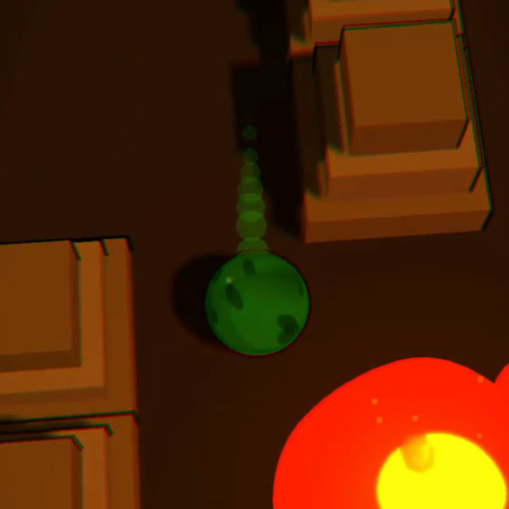
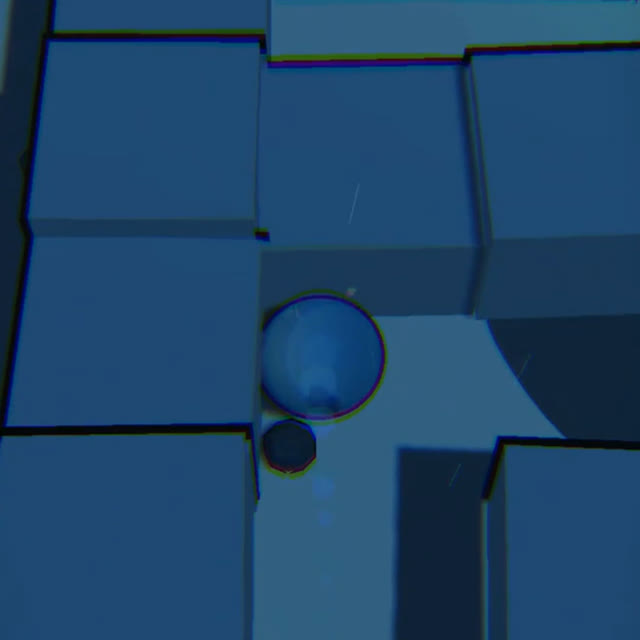
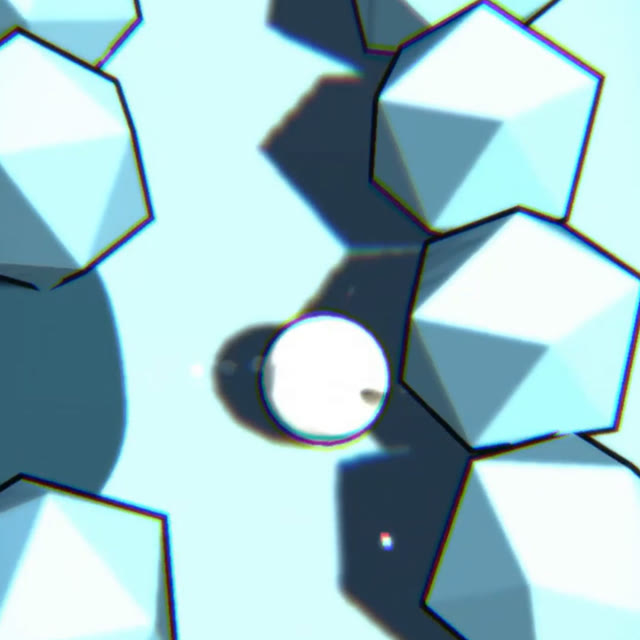

Out now on Steam & Google Play
Matter MazeBall — tilt, roll, survive.
A cel-shaded tilt-physics maze where what your ball is made of changes everything. Stone sinks, ice melts, fire spreads — and the maze doesn't care which one you brought. 30 elemental balls, 39 mazes across three worlds, no two runs alike.



Matter MazeBall
Tilt-and-roll physics mazes where fire, ice, water & storms rule the ball.
// out now on steam & google play
Matter MazeBall — Element Trials
Casual · Puzzle · Local Co-op
- 30 elemental balls — stone, fire, water, ice, air and more, each with its own physics
- 39 mazes, three worlds — elemental adventures, real-world cities, and mega-city landmarks
- Living hazards & weather — lava, storms, wind and rain that physically push your ball around
- Daily maze + endless mode, local 2-player races, and full offline play
What we don't compromise on
Three rules that hold regardless of genre, platform, or how many games we've shipped.
Every game starts from a mechanic we haven't seen before, never a genre we're chasing. If it feels like something else, we haven't found the game yet.
Premium, built by hand
Every visual and sound is procedural — written in code, not licensed from a store.
No dark patterns
"One more run" should feel like your own idea. We never guilt, pressure, or trick.
Accessible by default
Colorblind-safe, readable, and built to include as many players as the game allows.
Let's talk
Press, partnerships, support, or just a note — we read everything ourselves.